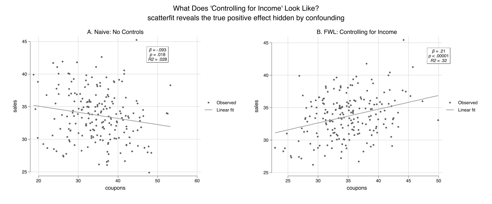
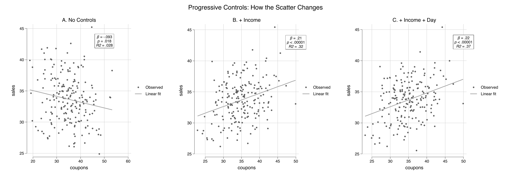
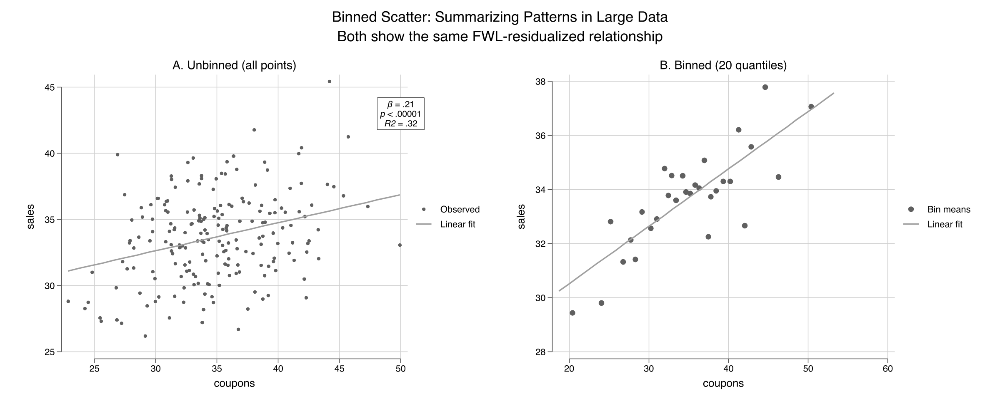
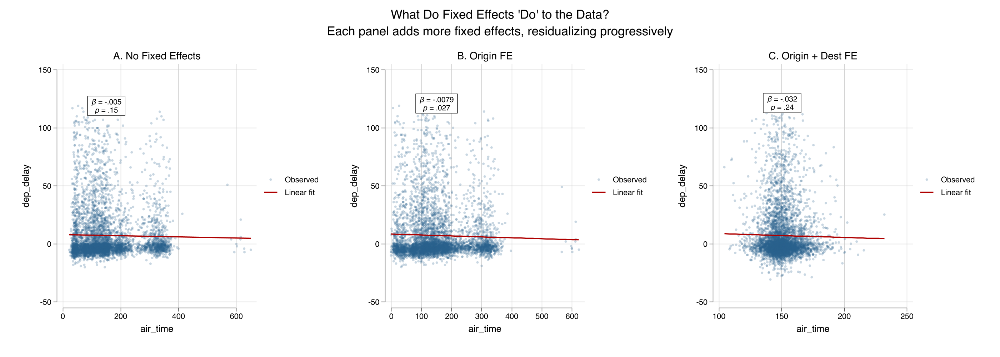
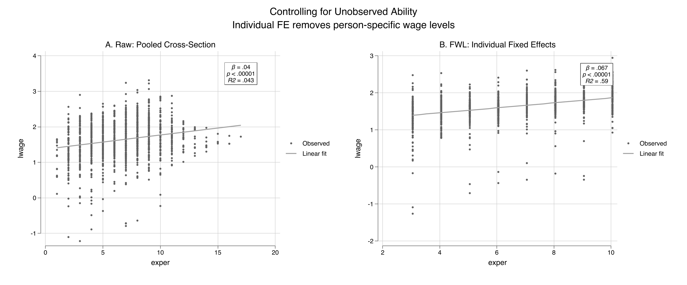

What ‘controlling for’ looks like as a scatter plot
Nagoya University (GSID)
June 11, 2026
Act I
A store manager asks: do coupons lift sales? The raw scatter says no — more coupons, lower sales.
But “the effect of coupons, holding income fixed” lives in three dimensions. How do you put that on two axes?

Naive scatter (left): negative slope, R² = 0.028. After controls(income) the slope reverses to positive, R² = 0.32. Same 200 stores, two pictures.
scatterfit — partialling-out in one commandAct II
sales (200 stores)coupons distributed (true effect +0.2)income: rich areas get fewer coupons but buy moreThe store targets promotions at lower-income areas, so coupons and income are negatively linked (−0.71). Income also lifts sales. That opens a backdoor path the naive slope never blocks.
| Pair | Correlation | Reading |
|---|---|---|
| coupons · sales | −0.17 | looks like coupons hurt sales |
| income · coupons | −0.71 | store sends fewer coupons to rich areas |
| income · sales | +0.50 | rich areas buy more |
The true coupon effect is +0.2 — the negative raw correlation is income leaking through.
\[\hat\beta_1=\frac{\operatorname{Cov}(\tilde y,\tilde x_1)}{\operatorname{Var}(\tilde x_1)}\]
Regress \(y\) on the controls \(Z\) and keep the residual \(\tilde y\). Regress \(x_1\) on \(Z\) and keep \(\tilde x_1\). The simple slope of \(\tilde y\) on \(\tilde x_1\) equals the multiple-regression coefficient on \(x_1\).
The tildes mean “the part \(Z\) cannot explain.” Two paths, one number.
controls(income) tells scatterfit to call reghdfe, residualize both axes on income, then plot \(\tilde y\) against \(\tilde x_1\).
| Term | Naive OLS | + income | Reading |
|---|---|---|---|
| coupons | −0.0934 | 0.2123 | sign reverses |
| income | — | 0.3004 | confounder, near true 0.3 |
| R² | 0.028 | 0.321 | variation explained jumps |
The +0.212 lands right on the true effect of +0.2; income’s coefficient lands on its true 0.3.
\[\text{bias}=\hat\gamma\times\hat\delta=0.300\times(-0.494)=-0.148\]
\(\hat\gamma\) is income’s effect on sales; \(\hat\delta\) is the coupons-on-income slope. The naive slope is the true slope plus this bias.
Nothing mysterious: a positive \(\hat\gamma\) times a negative \(\hat\delta\) drags the naive estimate down.
The manual slope 0.212288 equals the full-regression coefficient 0.212288 — not close, identical.
0.212288
Manual FWL slope = full-regression coupon coefficient. Same number, two paths.

No controls (left, R² = 0.028) → + income (center, R² = 0.32) → + income + day-of-week (right, R² = 0.37). Each panel residualizes on more, so the cloud tightens.

Unbinned (left) vs. binned into 20 quantiles (right). Both show the same FWL-residualized fit (β = 0.21, R² = 0.32); binning replaces 200 points with 20 readable means.

Air-time vs. delay, NYC flights. No FE (left, R² ≈ 0) → origin FE (center) → origin + destination FE (right). fcontrols() demeans by group via reghdfe.
Act III

Raw pooled cross-section (left, R² = 0.043) vs. individual fixed-effects residualized scatter (right, R² = 0.59). fcontrols(nr) strips each person’s average — within-person experience returns ≈ 7%.
scatterfit)scatterfit y x — raw, controls(z) — partial out Z, fcontrols(fe) — group FE, binned · regparameters()fwl_plot(y ~ x + z)fwl_plot(y ~ x | fe)resid()The numbers match across all three because the datasets are identical — FWL is the same theorem everywhere.
Objection. A partial-regression plot looks like proof that coupons cause +0.212.
Response. It is not. FWL is an algebraic identity about a linear regression coefficient — it visualizes “holding Z fixed,” nothing more. The +0.212 is causal here only because we built a known DGP; in real data, identification still rests on having the right controls in Z. FWL shows what a coefficient is, not whether it deserves a causal reading.